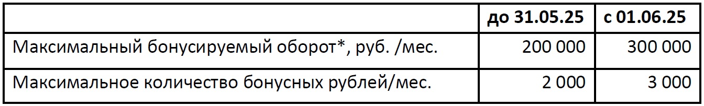

Новости УРАЛСИБ
26 мая 2025 г. — Банк Уралсиб поздравляет предпринимателей России с профессиональным праздником!
Банк Уралсиб поздравляет предпринимателей страны с профессиональным праздником – Днем предпринимателя! Банк Уралсиб – надежный, эффективный и выгодный партнер для бизнеса, мы стабильно работаем...
Мы стабильно работаем на банковском рынке страны уже более 35 лет. Нас выбирают за большой спектр возможностей для ведения и развития вашего бизнеса, широкую линейку удобных и выгодных продуктов и услуг, простые и понятные условия, индивидуальный подход к каждому клиенту. Сегодня с нами работает более 170 000 клиентов малого и среднего бизнеса по всей стране, на протяжении многих лет мы стабильно входим в Топ-10 банков по объемам кредитования МСБ (Эксперт РА). Присоединяйтесь к команде наших замечательных клиентов, партнеров и друзей и выбирайте удобные и эффективные финансовые инструменты для развития вашего бизнеса! Выгодные акции. Акция «Удобный момент» для новых бизнес-клиентов – с бесплатным расчетно-кассовым обслуживанием в течение 12 месяцев. Акция «Эквайринг за 0%» – с бесплатным торговым эквайрингом на 4 календарных месяца. Быстрый и надежный торговый эквайринг. Установка оборудования от 1 дня (SIM-карты от МТС, Мегафона или Теле2 для банковского терминала), тарифы – от 0,4% за QR-платежи и гибкие условия для бизнеса, круглосуточная поддержка. Оптимальные пакеты РКО. Выберите один из 4 простых пакетов — «Стартовый», «Удобный», «Разумный» и «Максимальный» с оптимальным наполнением для вашего бизнеса, включая бесплатные платежи контрагентам, переводы любым физлицам до 750 000 ₽ в месяц и бизнес-карту. Широкий функционал онлайн-банкинга. Возможность по максимуму взаимодействовать с банком в дистанционном режиме. СБП-платежи и эффективное управление бизнес-картами. Платеж будущей датой — период до 8 календарных дней. Сервис «Картотека и ограничения» — вовремя покажет неоплаченные расчетные документы и/или ограничения по счетам. Бизнес-карта – удобный и функциональный инструмент для ведения бизнеса. Онлайн-заказ карты, платежи 24/7 и шаблоны для частых переводов, одинаковая комиссия за внесение/снятие в банкоматах банков-партнёров и Уралсиба. Простой и эффективный зарплатный проект. Онлайн-заявка на заказ зарплатных карт, прямая интеграция с 1С-Директ для выплаты зарплаты, простая загрузка зарплатных реестров и отслеживание статуса исполнения. Большие возможности для ВЭД. Прямые расчеты в 9 национальных валютах, индивидуальные платежные решения и исполнение обязательств по контрактам ВЭД, расширенная география международных расчетов в рублях. Сервис экспертной поддержки – от подбора продуктов ВЭД до полной экспертизы контрактов и помощи в оформлении документов валютного контроля. Простой процесс получения кредитов. Электронное подписание документов без посещения офиса банка. Онлайн-оформление экспресс-кредита: от подачи заявки до выдачи кредита. Электронная регистрация ипотеки. Упрощённое получение бизнес-овердрафта для клиентов с выручкой до 50 млн ₽. Широкие возможности банковских гарантий. Банковская экспресс-гарантия по рыночной стоимости в день обращения. Расширенный перечень гарантий в пользу ФТС и ФНС (возмещение НДС – до 50 млн ₽, в пользу ФНС – до 60 млн ₽, в пользу ФТС – до 130 млн ₽). Выдача прямых гарантий в пользу ФТС. Простое и выгодное размещение депозитов. Новый депозит с возможностью расторжения и досрочного вывода денег без потери ставки. Увеличенное время размещения в интернет-банке – до 19:00 по местному времени. Начисление процентов на счета группы клиентов – виртуальный пулинг. Подробную информацию и полные условия по продуктам и акциям для бизнес-клиентов можно узнать на сайте ПАО «БАНК УРАЛСИБ» или по телефону 8-800-700-77-16.
26 мая 2025 г. — Об отмене с 01.06.2025 года комиссии за переводы физлиц клиентам иностранных банков по номеру телефона
С 01.06.2025 года ПАО «БАНК УРАЛСИБ» отменяет комиссию за перевод денежных средств со счетов физических лиц в российских рублях в системе…
Уважаемые клиенты! С 01.06.2025 года ПАО «БАНК УРАЛСИБ» отменяет комиссию за перевод денежных средств со счетов физических лиц в российских рублях в системе ДБО «Уралсиб Онлайн», отправляемых клиентам иностранных банков по номеру телефона. Дополнительную информацию о расчетно-кассовом обслуживании физических лиц и переводах можно получить на сайте ПАО «БАНК УРАЛСИБ» или в чате «Уралсиб Онлайн». С уважением, Банк Уралсиб
23 мая 2025 г. — Об изменении условий по накопительному «Уралсиб счету» с 01.06.2025 года
С 01.06.2025 г. изменяются условия по накопительному «Уралсиб счету». Основные изменения:…
Уважаемые клиенты! С 01.06.2025 г. изменяются условия по накопительному «Уралсиб счету». Основные изменения: · устанавливаются новые процентные ставки; · сумма обязательных покупок по карте для получения максимальной выгоды составит 20 000 ₽ на любом тарифном плане; · специальные условия с повышенной ставкой для зарплатных клиентов и клиентов с пакетами «Premium» и «Private». Накопительный «Уралсиб счет» — максимум выгоды с месяца открытия счета при выполнении простых условий по сумме покупок по карте! С новыми условиями и ставками можно ознакомиться в разделе «Тарифы» на сайте Банка Уралсиб. С уважением, Банк Уралсиб.
23 мая 2025 г. — Сотрудники Уралсиба предотвратили мошенничество в Нижнем Новгороде
Слаженные действия работников Банка помогли предотвратить оформление потребительского кредита клиенту, находящемуся под влиянием мошенников. Подробнее…
Слаженные действия работников Банка помогли предотвратить оформление потребительского кредита клиенту, находящемуся под влиянием мошенников. Инцидент произошел в Дополнительном офисе «Нижегородский» ПАО «БАНК УРАЛСИБ», в который клиент обратилась со стандартной заявкой — оформлением потребительского кредита на сумму 400 000 ₽. При общении клиентка выглядела взволнованной и не интересовалась условиями договора, настаивая на скорейшем завершении процедуры. Главный клиентский менеджер Валентина Летова сообщила о своих подозрениях управляющему Дмитрию Задыраке и руководителю группы безопасности Алексею Сидорову. Благодаря доверительной беседе сотрудники выяснили, что мошенники ранее уже убедили её оформить кредит в стороннем банке и перевести деньги на «безопасный счет». Продолжая психологическое давление, они заставили ее обратиться в Уралсиб за новым кредитом для последующего перевода средств на подконтрольный счет. Избежать потери средств помогли бдительность и профессионализм сотрудников Уралсиба. Им удалось убедить клиентку отказаться от оформления сделки. «Валентина Летова обратила внимание, что клиентка не уточняет условия кредита и заподозрила мошенничество. После разговора мы убедились в её опасениях, и отказали в выдаче», — пояснил Дмитрий Задырака. О происшествии сообщили в правоохранительные органы, где пострадавшая подала заявление о ранее совершённых мошеннических действиях. Банк Уралсиб активно проводит разъяснительную работу о методах защиты от мошенничества через различные каналы коммуникаций.
23 мая 2025 г. — Банк Уралсиб вошел в Топ-10 лучших ипотечных программ на вторичном рынке
Банк Уралсиб вошел в Топ-10 рейтинга (6 место) лучших ипотечных программ на вторичном рынке в мае 2025 года, который подготовил портал Выберу.ру. Ещё…
Банк Уралсиб вошел в Топ-10 рейтинга (6 место) лучших ипотечных программ на вторичном рынке в мае 2025 года, подготовленного порталом Выберу.ру. В рейтинге рассматривались предложения российских банков из Топ-50 по размеру розничного кредитного портфеля на 01.04.2025. Ключевые критерии: процентная ставка, сумма ежемесячных платежей, полная стоимость кредита, процент первоначального взноса, условия ипотечного страхования и способы снижения ставки, правила применения материнского капитала и другие. Оценивайте свои финансовые возможности и риски. Полные условия можно узнать в отделениях банка, по телефону 8-800-250-57-57 или на сайте ПАО «БАНК УРАЛСИБ».
23 мая 2025 г. — Об улучшении условий по программе лояльности «Уралсиб Бонус»
Уважаемые клиенты! С 01.06.2025 изменяются условия программы Уралсиб Бонус для клиентов, не являющихся держателями пакетов Premium light, Premium, Private\Прайвет…
 * максимальная сумма покупок, на которую начисляются бонусные рубли. За покупки, совершённые в мае, бонусные рубли будут начислены 10 июня по действующим в мае условиям. С уважением, Банк Уралсиб
22 мая 2025 г. — Банк Уралсиб увеличил объемы ипотечного кредитования в 1,5 раза
Банк Уралсиб за 4 месяца 2025 года увеличил объемы ипотечного кредитования в 1,5 раза по сравнению с прошлогодним периодом – до…
Банк Уралсиб за 4 месяца 2025 года увеличил объемы ипотечного кредитования в 1,5 раза по сравнению с аналогичным периодом прошлого года – до 13,2 млрд ₽. В январе–апреле выросла доля кредитов на покупку вторичного жилья в 7 раз и составила почти половину выданного объема. В первичном сегменте основным продуктом была «Семейная ипотека», объём которой тоже вырос в 1,5 раза. Ипотечный портфель банка с 01.05.2024 по 01.05.2025 вырос со 134,8 млрд до 145,5 млрд ₽. Оценивайте свои возможности и риски. Полные условия и заявки доступны в отделениях банка, по телефону 8-800-250-57-57 и на сайте ПАО «БАНК УРАЛСИБ».
22 мая 2025 г. — О недоступности операций по вкладам и счетам в Уралсиб Онлайн 25 мая
Информируем вас о том, что 25.05.2025 года, в связи с проведением технических работ, в системе Уралсиб Онлайн (Мобильный банк и Интернет Банк) операции по открытию и закрытию вкладов/счетов могут …
Уважаемые клиенты! Информируем вас о том, что 25.05.2025 года, в связи с проведением технических работ, в системе Уралсиб Онлайн (Мобильный банк и Интернет Банк) операции по открытию и закрытию вкладов/счетов могут обрабатываться дольше обычного. Заявки на открытие и закрытие вкладов/счетов, направленные 25.05.2025 года, будут исполнены 26.05.2025 года.
21 мая 2025 г. — Вклад «Доход» Уралсиба – в Топ-5 лучших годовых вкладов
Вклад «Доход» Банка Уралсиб вошел в Топ-5 рейтинга вкладов в рублях сроком на 1 год со ставкой выше 19% годовых, по версии...
Вклад «Доход» Банка Уралсиб вошел в Топ-5 рейтинга вкладов в рублях сроком на 1 год со ставкой выше 19% годовых, по версии Банки.ру. В исследовании рассматривались предложения 30 крупнейших банков по объему вкладов физлиц в финансовом рейтинге Банки.ру (на 01.04.2025 года) — вклады с минимальной суммой для открытия от 10 000 до 100 000 рублей включительно.
19 мая 2025 г. — Сапсаны Уралсиба «перенесли» онлайн-трансляцию на следующий год
Ежегодная онлайн-трансляция из жизни сапсанов на крыше Уралсиба в Уфе в 2025 году поставлена на паузу.
Впервые за много лет семья соколов завершила сезон «бездетно», и самка покинула место гнездования. Однако самец ежедневно возвращается на ночевку на крышу уралсибовской высотки, охраняя свое «родовое гнездо» от конкурентов. Много лет соколиная семья ежегодно прилетает выводить птенцов на одно и то же место, и сокол ревниво оберегает свой дом, чтобы в нем на следующий год этот неизменный цикл повторился снова.